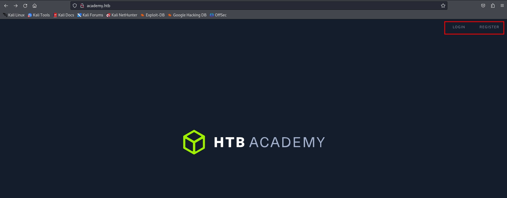
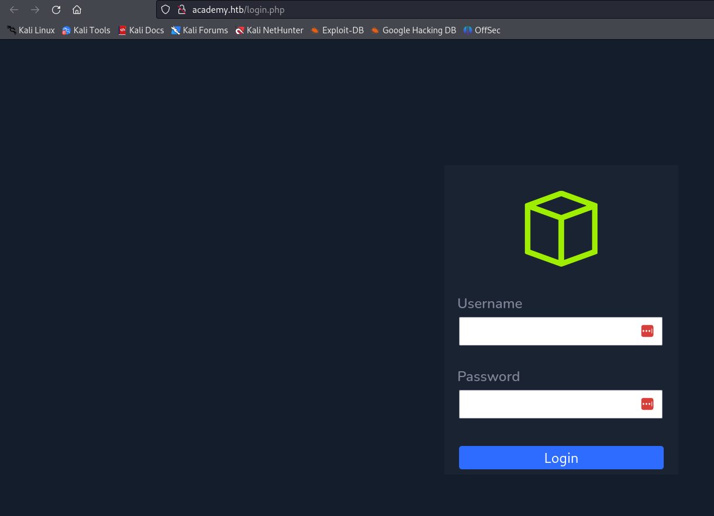
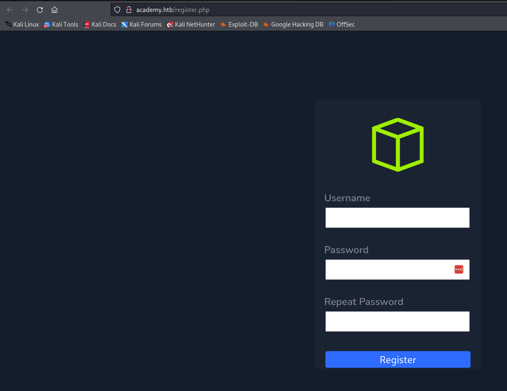
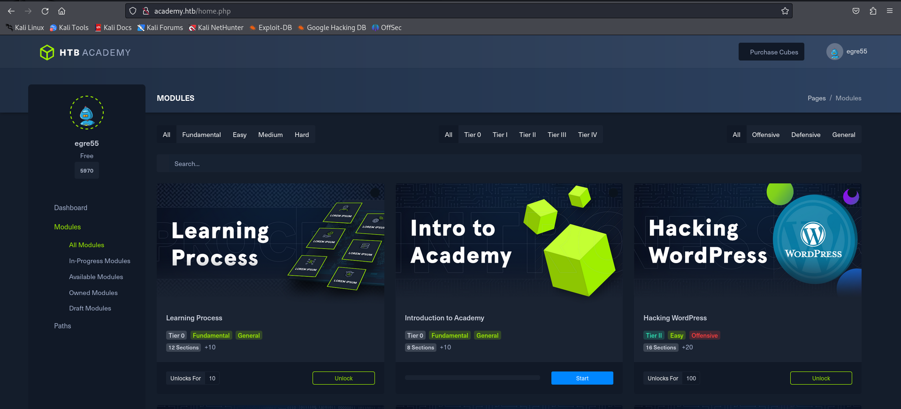
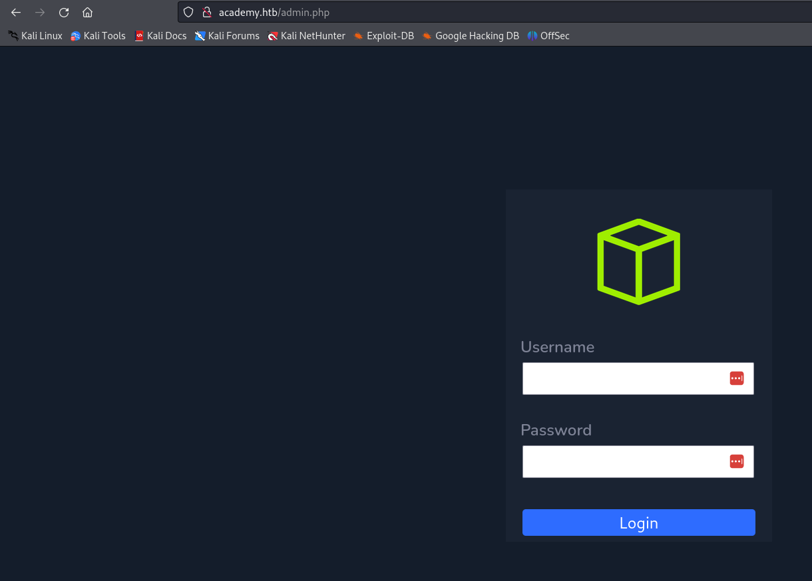
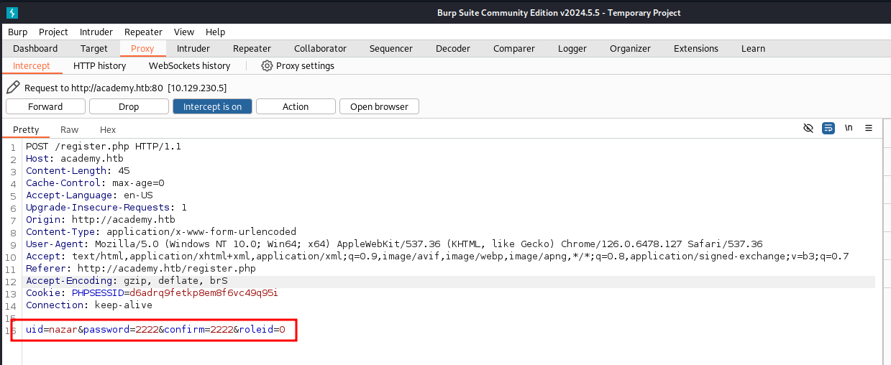
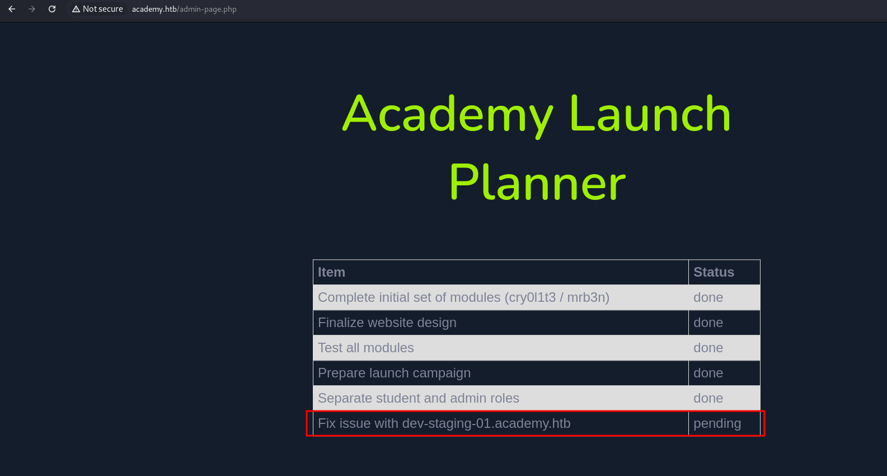
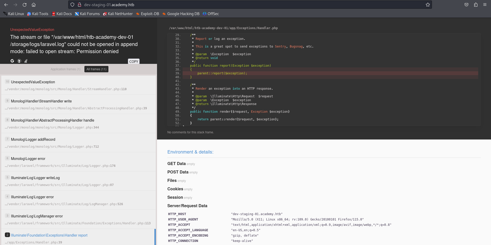

academy.htb
``` sudo nmap -p- --min-rate=10000 academy.htb
PORT STATE SERVICE 22/tcp open ssh 80/tcp open http 33060/tcp open mysqlx
```
  

There is an admin login page that looks just like the default login page. However, the new user doesn't work. 
I opened BurpSuite and decided to go through different pages and see what I can do. Later on I found something interesting on the register page. 
I set roleid to 1 than went to the admin.php and got in.

That's where I found a subdomain.

It looks like a page where we can see all the logs.
Discovering a little bit more I realized that it was the laravel framework. Than I found an exploit CVE-2018-15133 and used it to get a shell.
Reading this file: /var/www/html/academy/.env I found a password for user cry0l1t3 and sshed into it.
Interesting that the user is part of group adm.
In order to, not to spend too much time I used the hint and found that I had to read the audit logs. Using a tool called: aureport and the next command:
aureport --tty
I found a password to user mrb3n
Then, using sudo -l I found that the user can execute composer as a root. Than I found how to exploit it to get root.
https://gtfobins.github.io/gtfobins/composer/#sudo